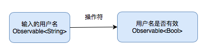
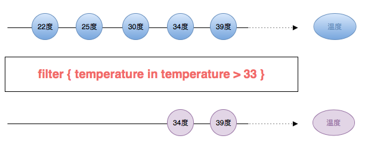
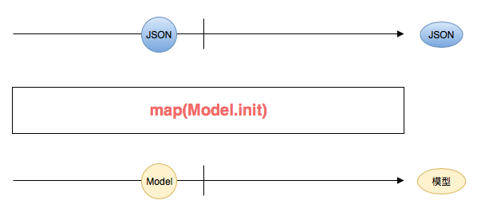
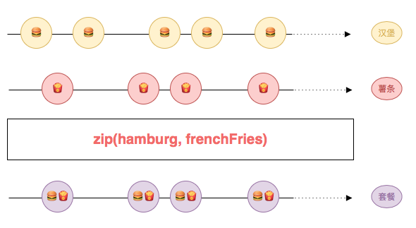

Operator - 操作符

操作符可以帮助大家创建新的序列。它也可以变化组合原有的序列，从而产生一个新的序列。
我们之前在输入验证例子中就多次运用到操作符。例如，通过map方法将输入的用户名，转换为用户名是否有效。然后用这个转化后来的序列来控制红色提示语是否隐藏。我们还通过 combineLatest 方法，将用户名是否有效和密码是否有效合并成两者是否同时有效。然后用这个合成后来的序列来控制按钮是否可点击。
这里map和combineLatest都是操作符，它们可以帮助我们构建所需要的序列。现在，我们再来看几个例子：
操作符示例
filter

你可以用
filter创建一个新的序列。这个序列只发出温度大于 33 度的元素。map

你可以用
map创建一个新的序列。这个序列将原有的 JSON 转换成 Model。通常我们称之为解析 JSON。zip

你可以用
zip来合成一个新的序列。这个序列将汉堡序列的元素和薯条序列的元素配对后，生成一个新的套餐序列。
如何使用操作符
使用操作符是非常简单的。你可以直接调用实例方法，或者静态方法：
温度过滤
// 温度 let rxTemperature: Observable<Double> = ... // filter 操作符 rxTemperature.filter { temperature in temperature > 33 } .subscribe(onNext: { temperature in print("高温：\(temperature)度") }) .disposed(by: disposeBag)解析 JSON
// JSON let json: Observable<JSON> = ... // map 操作符 json.map(Model.init) .subscribe(onNext: { model in print("取得 Model: \(model)") }) .disposed(by: disposeBag)合成套餐
// 汉堡 let rxHamburg: Observable<Hamburg> = ... // 薯条 let rxFrenchFries: Observable<FrenchFries> = ... // zip 操作符 Observable.zip(rxHamburg, rxFrenchFries) .subscribe(onNext: { (hamburg, frenchFries) in print("取得汉堡: \(hamburg) 和薯条：\(frenchFries)") }) .disposed(by: disposeBag)
决策树
Rx 提供了充分的操作符来帮我们创建或者变化组合序列。当然如果内置操作符无法满足你的需求，你还可以创建自定义的操作符。
如果你不知道该如何选择操作符，可以参考 决策树。它会引导你找出合适的操作符。
操作符列表
- combineLatest
- delay
- debounce
- distinctUntilChanged
- do
- filter
- flatMap
- map
- merge
- observeOn
- retry
- scan
- shareReplay
- skip
- skipUntil
- startWith
- subscribeOn
- takeUntil
- timeout
- withLatestFrom
- zip